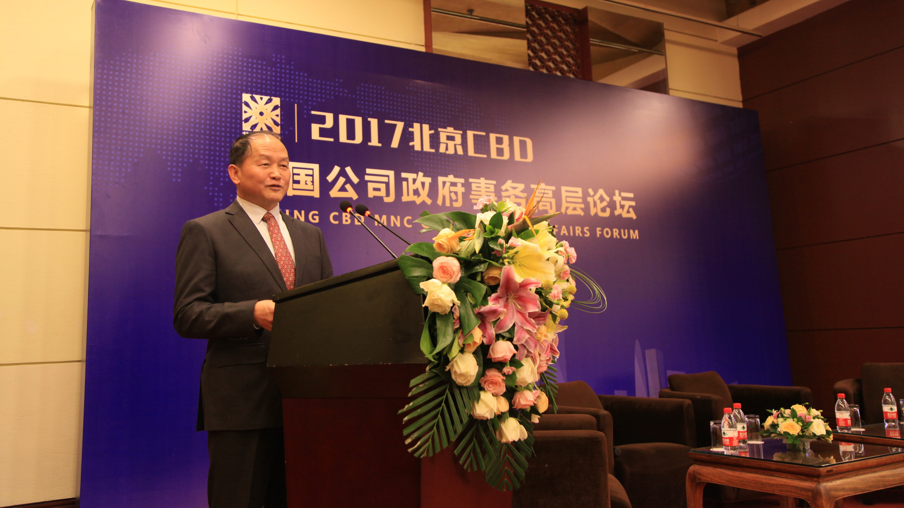
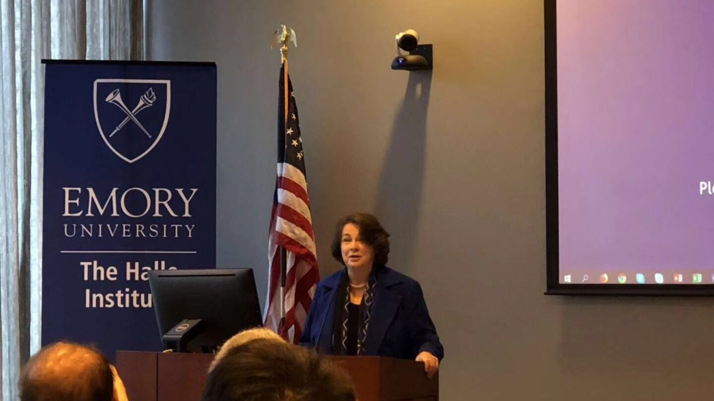

中美反恐论坛
自从2014年，美中新视角基金会连续四年在北京杉园举办了中美反恐国际高层论坛。论坛由美中新视角基金会，美国全球接触研究所，以及北京普世社会科学研究所共同召集。论坛的主要参与者是中美双方退役高级将领和反恐专家及学者。反恐是中美合作的一个新领域。美中新视角基金会的反恐论坛因其高规格、高质量而成为中美反恐人士关注的一个重要会议。

中日学者对话
2017年2月26日，美中新视角基金会和日本笹川日中友好基金在北京杉园联合举办中日学者对话活动。会议的主题是朝鲜半岛的核问题。会议邀请了日本国际问题研究所研究员饭村友纪、山崎周以及关西大学教授平岩俊司、霞山会研究员堀田幸裕与中联部原副部长于洪君、中共中央党校国际战略研究院教授张琏瑰、左凤荣等中国资深学者进行了关于朝核问题的深入探讨。

北京跨国公司研讨会
2017年12月7日，“北京CBD跨国公司政府事务高层论坛”在京圆满闭幕。此次论坛，由北京CBD跨国公司政府事务俱乐部与北京智享荟咨询有限责任公司(Z-share Consulting, http://z-share.net/)共同筹划组织，商务部外资司、北京市商务委总部经济处、北京CBD管委会等单位领导莅临论坛。
美中新视角基金会创始人、总裁周志兴主持论坛，嘉宾们围绕“全面开放新格局下投资中国的机遇与优势”的主题开展深度对话交流，在中国吸引外资新机遇、中国全面开放新格局下的经济增量、提高投资服务质量等方面取得了很多共识，收到了良好效果。
首届"中国西太湖·全球公司发展论坛"成功举办：务实探讨全球公司发展与中国经济的未来
当今时代，新一轮科技和产业革命正孕育兴起，国际分工体系加速演变，全球价值链深度重塑。现在的跨国公司，很多已经成为全球公司。世界全球公司很多已经或将要进入中国，很多中国全球公司已经或将要走向世界。全球公司走进来会遇到什么问题，走出去会遇到什么问题?2018年5月11日—12日在江苏省常州市西太湖畔召开的首届"中国西太湖·全球公司发展论坛"，对此开展了广范围、多轮次的深度对话交流，以促进国际互联互通，助力中国和世界经济的开放发展。本次论坛也是第十三届中国常州先进制造技术成果展示洽谈会系列活动之一!
论坛针对全球公司的关注点、需求点，设置4个分论坛，提供实操经验和策略方法。
"海外利益保护和全球公司发展"分论坛，主要探讨"一带一路"沿线国家投资安全形势、中国保护海外利益最新政策和举措、企业走出去之前和走出去之后的安保实操等问题。

"合规和全球公司发展"分论坛，主要探讨公司合规和可持续发展、国内企业面临的合规风险、中外合规标准差异、合规体系标准化、合规文化建设和人才培养等问题。

"营商环境改善和全球公司发展"分论坛，主要探讨中国吸引外资和市场准入、新型政企关系内涵与构建、非国有经济融资、特朗普经济政策对全球贸易和投资影响等问题。
"数字化、智能化和全球公司发展"分论坛，主要探讨中国制造强国建设中需要政府、企业重视的新情况，以及前沿科技趋势、国际先进经验、企业转型实操等问题。

论坛汇聚全球经济的实践者、研究者和决策者，包括国家部委政策制定和指导部门有关领导，中、美、日、德等国一流智库专家学者，国际商会和机构代表，全球公司大中华区负责人，知名中国企业家等在内的280余位嘉宾。
论坛大会秘书长、美中新视角基金会主席周志兴表示，"我们原则是开一个务实的论坛，不是大而化之地发议论，而是实实在在地做探讨，务实才是主旨。也许我们请的专家不是最有知名度的，请的企业家不是最有钱的，请的官员不是有很大官帽的，但是，一定是接地气的，专家是脚踏实地的有真知灼见的，官员是在实际操作一线了解具体步骤的，企业是大有发展的而且在海外极有前途的。"
本届论坛诸多嘉宾的发言引发参会者热烈讨论，包括新浪网、人民网、环球网、财讯网、第一财经、经济观察报、界面新闻等知名媒体对论坛进行了广泛的报道。
本届论坛成功举办后，论坛将常州西太湖作为永久会址，每年一届，将会继续以务实、开放、理性、求真的态度探讨全球公司发展过程中遇到的实际问题，共话全球公司发展与中国经济的未来。
中日学者对话中日经济问题
通过这40多年以来的发展，不管中间的起起伏伏，总体上中日间已经形成了相对密切的经贸关系。不管政治关系好坏，都是一种相互需要，既有利于双方各自的经济需求，同时也强化了双方的总体关系。中日经贸关系是双边关系非常重要的一个内容。

2018年3月27日·北京·杉园“中日学者经济对话”现场
周志兴(美中新视角基金会主席)：我们开始。第一个话题就是中日经济融合的现状、前景和具体思路。这个题目比较笼统，但是我想请日方的堂之上武夫来讲这个话题，时间是15分钟。堂之上武夫先生曾经是日本驻华使馆的经济参赞，所以对日本的经济和中日经济关系都非常了解。
堂之上武夫(日本贸易振兴机构北京事务所所长)：我是日本贸易振兴机构(JETRO)北京事务所的所长堂之上，今天有这样一个非常难得的机会，非常感谢大家。我本人已经是第五次驻到北京，在中国已经居住11年，今天请大家多多关照。
今天的主题是中日经济融合现状、前景以及具体思路，我们先看一下日中贸易的动向。比如说现在日中之间贸易商品有手机，有服装，还有很多家电产品。我们来看一下贸易的一些数字。日中之间的贸易额，尽管近些年一直是下降的趋势，但是在2017年突然上升了。比如说和东盟还有欧盟相比确实是显示了下降的趋势，但2017年还是达到一个比较高的额度。这是日本统计的一个结果。可以说中国依旧是日本非常重要的贸易合作伙伴。在进出口方面，中国都是排在日本贸易对象国的第一位。而且自2007年开始连续11年排在了第一位。
再看一下日中旅行观光者的数字，去日本的中国游客已经达到了非常高的数字。但非常遗憾的是，从2012年、2013年开始，日本人来中国的游客数字却是逐年在缩减。
我们来看一下日中贸易的具体情况，中国对日出口，比如说有手机，还有一些成品等，日本对中国的出口，有零部件等。数字是在减小的，中国对日本出口的还有服装部分，这一部分也是在逐年减少。这边的统计数字是2017年做出的，比如说像大都市北京、上海、广州、深圳、武汉、重庆，在这些大城市进行的市场调研中，日本已经成为中国人最想去的国家之一。所以，日本对于中国人来说，已经成为一个观光的大国。
来看一下跨国之间的经济合作部分，是在逐年扩大，而且未来也将进一步扩大。日本对中国的进口已经达到非常高的数字，中国观光者去日本，更多的还是买电器产品和化妆品，包括一些药妆产品。针对中国游客的调查，他们认为日本的产品品质好，还有就是没有假货。
再来看一下日中之间的投资状况。日本对中国的投资，在2012年达到了一个峰值，之后逐年在减少。我们来看一下按照行业划分的日本对中国的投资，比如说汽车，还有一些设备，还有第三产业，有一些批发业，等等。
我们看一下今后的事业展望。比如说在中国国内进行生产销售，像机器人等产业都在中国国内进行消化。我们再看一下采购部分，众所周知，在中国国内材料成本和人工成本都是在逐年上升。中国的这些企业都可以在中国国内进行采购，采购的比重可以占到67.3%，这是非常高的水平。还有像运输、金融，还有关于高龄人口的产业。在中国，老龄化的问题非常严重，中国的第十三个五年计划当中，特别提出了国家老龄事业，比如说在家中的养老服务，中国也陆续出台了一些新的政策，就此日本企业也将进一步积极地予以响应。这些领域的日企也将进入中国，协助中国进行相关老龄产业的发展。
还有一些老年痴呆的患者，他们可以进一步享受老龄生活的一些设施。我们JETRO在日本对华投资方面也采取了一些相关的推进措施，来看一下这几年的实际业绩。中国继美国之后，JETRO在中国已经实现了32个成功的案例;涉及的领域和行业，比如说有汽车，特别是轻量化的，有与旅游相关的，还有IT和一些具体的产品工具，当然也涉及制造业。
我在这里简单总结一下，日中双方彼此都是很重要的合作伙伴，我们希望建立双赢的合作关系。对今后交流的拓展，我们也给予了非常高的期待。而且今年是《日中和平友好条约》缔结40周年，在这样一个特殊的时点，我们希望日中双方能够进一步扩大合作成果，为此，JETRO也将进一步做出努力。谢谢大家!
旋风九日系列访美活动
2016年11月10日至22日，美中新视角基金会策划并组织了反映邓小平1979年访美全程记录的影片《旋风九日》在美国的放映活动。基金会创始人周志兴和《旋风九日》导演傅红星作为代表团领队和主要发言人，到亚特兰大、波士顿、纽约、华盛顿、洛杉矶及圣地亚哥六个城市，举行了七场放映研讨会，并邀请到美国首位亚裔女大使张之香，卡特政府时期的国家安全顾问、参与了邓小平访美的布热津斯基和中国驻美国大使崔天凯等重量级嘉宾参加研讨。 11月16日，纪录片《旋风九日》在华盛顿子午线中心展映。中国驻美国大使崔天凯、美前国家安全事务助理布热津斯基应邀出席活动并致辞。美国会众议员里克•拉森、美中教育基金会主席张之香大使、子午线中心总裁霍利戴大使及各界人士近百人参加了展映活动。

市长代表团
2017年3月11-17日，基金会与美国泰倡议 （Tai Initiative）联合举办美国市长代表团访华活动，代表团由美国密歇根州威斯特兰市和俄亥俄州加哈纳市的市长及专业机构人士组成，访问了上海、常州、深圳三城，活动极大促进中美市级政府官员之间的交流和相互了解，帮助双方城市获知各自的经济合作机会和潜力。

泰倡议是一家位于美国西雅图的从事中美交流的非盈利机构。其主要工作重点是促进中美次国家层面的交流。
卡特中心论文征集活动
由卡特中心、《环球时报》、以及美国埃默里大学全球战略与项目办公室联合举办的第四届中美青年学者论坛会议于2018年1月30日在美国亚特兰大举行。中美青年学者论坛于2014年由卡特中心和环球时报携手建立，是为两国青年学者相互交流、沟通和研究课题所提供的平台。
来自中美十多个年轻学者在论坛上分享了他们的研究成果。南京大学国际关系学院朱峰，威尔逊中心基辛格中美关系研究所所长戴博、德州大学奥斯汀分校中国政策研究中心主任方大为等中美顶级专家对年轻学者的论坛进行了评判分析。
美中新视角基金会主席周志兴和《环球时报》主编胡锡进进行了专场演讲，从左右两派对中美关系存在的一些问题进行了分析。
美中新视角基金会作为此次论坛的协办单位，出版了《民族主义和国家认同对中美关系的影响》的论文集。